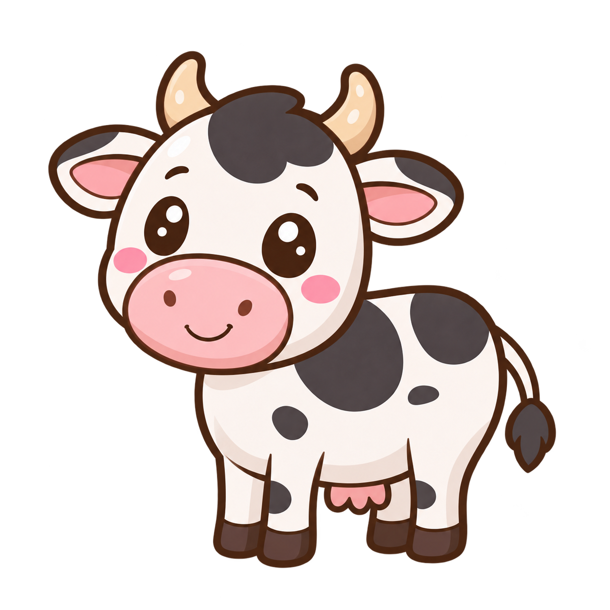

58 animais em sete categorias. Mesmo padrão de contorno marrom, olhos brilhantes sem cílios e sombras suaves. Clique nas artes para abrir os PNGs completos.
Fundo:

Referência aprovada Vaca chibi · proporções, olhos, contornos e acabamento comuns ao lote.
Padrão aplicado à biblioteca oficial. Arquivos anteriores preservados em backup-biblioteca-original. Versões legadas ocultas, fantasia, dinossauros e folclore ficam fora deste conjunto.